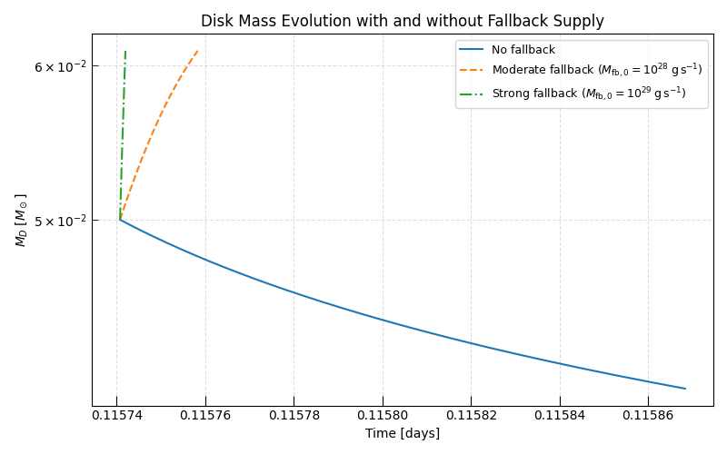
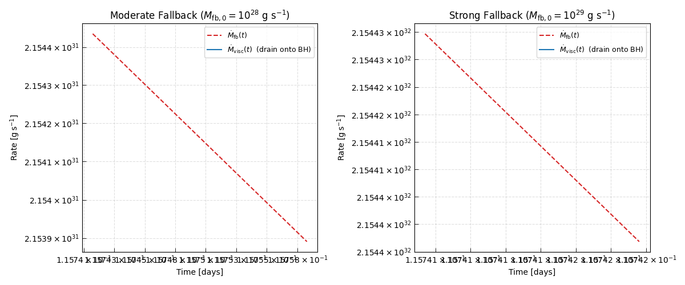
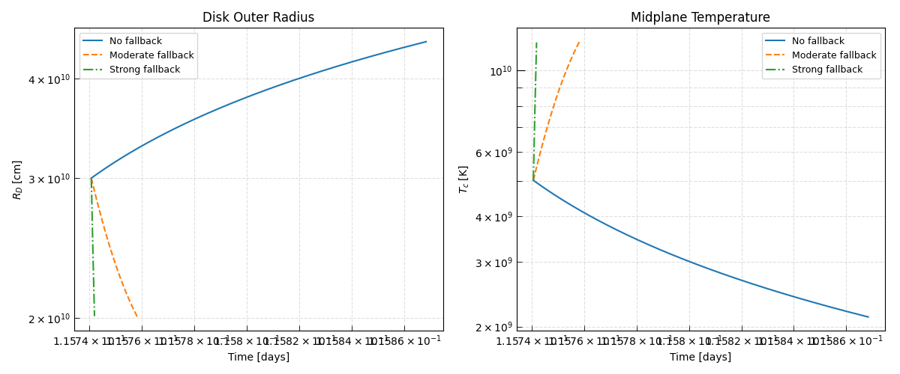
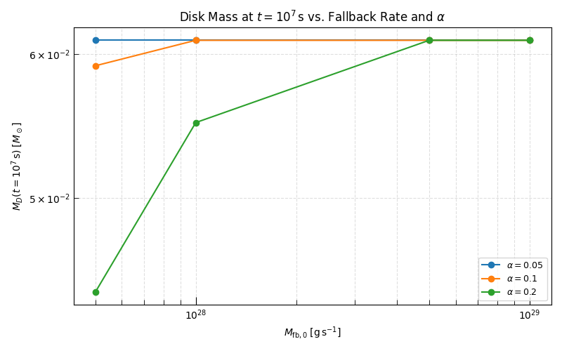

Note
Go to the end to download the full example code.
Accretion Disk with Fallback Mass Supply#
In many astrophysical transients — tidal disruption events (TDEs), collapsars, and compact binary mergers — the accretion disk does not simply drain passively. A fallback debris stream continuously replenishes the disk at a rate that declines as a power law in time:
For TDE debris and collapsar fallback, the canonical decay index is \(\beta_{\rm fb} = 5/3\), arising from the spread of orbital energies in the disrupted stellar debris. The normalization \(M_{\rm fb,0}\) sets the mass supply rate at a reference time \(t_{\rm fb}\) (typically the orbital period of the most bound debris).
Triceratops implements this fallback channel through a pluggable source term
architecture: a C-level function applied after the base viscous derivative at
every integration step. The
GasPressureDisk (with fallback=True)
and
FullPressureDisk (with fallback=True)
wire this source term onto the gas-pressure and full-pressure EOS
closures respectively, without any modifications to the integrator.
Physical Picture#
At early times, if the fallback supply rate exceeds the viscous drain rate,
the disk mass grows despite ongoing accretion. At late times, as \(\dot{M}_{\rm fb} \propto t^{-5/3}\) declines steeply while \(\dot{M}_{\rm visc}\) decreases more slowly, the viscous drain takes over and the disk mass eventually starts to fall. The transition between these regimes leaves a characteristic inflection in the disk mass and accretion rate light curves.
The fallback material is assumed to circularize at the current disk outer radius \(R_D\), depositing specific angular momentum \(\ell_{\rm fb} = \sqrt{G M_{\rm BH} R_D}\). This couples the mass and angular momentum budgets: as the disk is replenished, its outer radius evolves under the combined influence of viscous spreading and angular-momentum injection from the fallback stream.
In this example we compare three scenarios:
No fallback — a bare viscously draining disk (
GasPressureDisk).Moderate fallback — \(\dot{M}_{\rm fb,0} = 10^{28}\;\text{g\,s}^{-1}\) (comparable to the initial viscous drain rate).
Strong fallback — \(\dot{M}_{\rm fb,0} = 10^{29}\;\text{g\,s}^{-1}\) (dominant at early times).
See Also#
Hint
The fallback parameters M_fb_0, t_fb, and beta_fb are ordinary
runtime parameters — they appear in
RUNTIME_PARAMETERS
and are processed through the same unit-conversion and log-transform
pipeline as all other disk parameters. The default beta_fb = 5/3
follows the standard TDE debris decay.
Setup#
import matplotlib.pyplot as plt
import numpy as np
from astropy import constants as const
from astropy import units as u
from triceratops.dynamics.accretion.one_zone import GasPressureDisk
from triceratops.utils.plot_utils import set_plot_style
set_plot_style()
Initial Conditions#
We start with a relatively compact disk at \(R_{D,0} = 3\times10^{10}\) cm and derive \(J_{D,0}\) from the Metzger+08 kinematic constraint.
The same initial conditions are shared by all three models so that differences in the light curves are due solely to the fallback supply.
Initial disk mass: 0.049999999999999996 solMass
Initial J_D: 2.820912484255768e+50 cm2 g / s
Running the Integrations#
We instantiate one
GasPressureDisk
(no fallback) and one
GasPressureDisk (with fallback=True)
run at two different \(\dot{M}_{\rm fb,0}\) values.
Note
The fallback disk classes accept all the same runtime parameters as their
base counterparts, plus the three fallback parameters
M_fb_0, t_fb, and beta_fb (default \(5/3\)).
disk_fallback = GasPressureDisk(mu=0.6, fallback=True)
base_run_params = {"M_BH": M_BH, "R_in": R_in, "alpha": alpha}
t_span = (t_start, t_end)
max_steps = 200_000
# --- No fallback ---
result_base = disk_base.solve(ic, base_run_params, t_span, max_steps=max_steps)
# --- Moderate fallback ---
result_mod = disk_fallback.solve(
ic,
{**base_run_params, "M_fb_0": M_fb_0_moderate, "t_fb": t_fb},
t_span,
max_steps=max_steps,
)
# --- Strong fallback ---
result_strong = disk_fallback.solve(
ic,
{**base_run_params, "M_fb_0": M_fb_0_strong, "t_fb": t_fb},
t_span,
max_steps=max_steps,
)
print(f"No fallback: {result_base.n_steps:,} steps")
print(f"Moderate fallback: {result_mod.n_steps:,} steps")
print(f"Strong fallback: {result_strong.n_steps:,} steps")
No fallback: 200,000 steps
Moderate fallback: 200,000 steps
Strong fallback: 200,000 steps
Disk Mass Evolution#
The most immediate effect of the fallback supply is on the disk mass reservoir. Without fallback the disk drains monotonically. With moderate or strong fallback the mass first rises — or at least decays more slowly — before eventually the viscous drain wins as the fallback rate steepens.
The transition point where \(\dot{M}_{\rm fb} = \dot{M}_{\rm visc}\) marks the peak of the disk mass curve (for the strong-fallback case).
fig, ax = plt.subplots(figsize=(8, 5))
ax.semilogy(
result_base.data["t"].to(u.day).value,
result_base.data["M_D"].to(u.Msun).value,
ls="-",
label="No fallback",
color="C0",
)
ax.semilogy(
result_mod.data["t"].to(u.day).value,
result_mod.data["M_D"].to(u.Msun).value,
ls="--",
label=r"Moderate fallback ($M_{{\rm fb},0}=10^{28}\;{\rm g\,s}^{-1}$)",
color="C1",
)
ax.semilogy(
result_strong.data["t"].to(u.day).value,
result_strong.data["M_D"].to(u.Msun).value,
ls="-.",
label=r"Strong fallback ($M_{{\rm fb},0}=10^{29}\;{\rm g\,s}^{-1}$)",
color="C2",
)
ax.set_xlabel("Time [days]")
ax.set_ylabel(r"$M_D\;[M_\odot]$")
ax.set_title("Disk Mass Evolution with and without Fallback Supply")
ax.legend(fontsize=9)
ax.grid(True, which="both", ls="--", alpha=0.4)
plt.tight_layout()
plt.show()

Fallback Rate vs. Accretion Rate#
The competition between the fallback supply \(\dot{M}_{\rm fb}\) and the viscous drain \(\dot{M}\) (the accretion rate onto the black hole) determines the net disk mass budget.
The mdot_fb field is computed Python-side from the time array and the
fallback parameters — it is a derived result field with
CYTHON_FIELD_MAP["mdot_fb"] = None, meaning it is calculated by
_compute_derived_result_fields()
after the Cython integration rather than inside the hot loop.
data_mod = result_mod.data
data_strong = result_strong.data
fig, axes = plt.subplots(1, 2, figsize=(12, 5))
# ---- Moderate fallback ----
t_mod = data_mod["t"].to(u.day).value
axes[0].loglog(
t_mod,
data_mod["mdot_fb"].to(u.g / u.s).value,
label=r"$\dot{M}_{\rm fb}(t)$",
color="C3",
ls="--",
)
axes[0].loglog(
t_mod,
data_mod["mdot"].to(u.g / u.s).value,
label=r"$\dot{M}_{\rm visc}(t)$ (drain onto BH)",
color="C0",
)
axes[0].set_xlabel("Time [days]")
axes[0].set_ylabel(r"Rate $[\mathrm{g\,s^{-1}}]$")
axes[0].set_title(r"Moderate Fallback ($M_{{\rm fb},0} = 10^{28}$ g s$^{-1}$)")
axes[0].legend(fontsize=9)
axes[0].grid(True, which="both", ls="--", alpha=0.4)
# ---- Strong fallback ----
t_strong = data_strong["t"].to(u.day).value
axes[1].loglog(
t_strong,
data_strong["mdot_fb"].to(u.g / u.s).value,
label=r"$\dot{M}_{\rm fb}(t)$",
color="C3",
ls="--",
)
axes[1].loglog(
t_strong,
data_strong["mdot"].to(u.g / u.s).value,
label=r"$\dot{M}_{\rm visc}(t)$ (drain onto BH)",
color="C0",
)
axes[1].set_xlabel("Time [days]")
axes[1].set_ylabel(r"Rate $[\mathrm{g\,s^{-1}}]$")
axes[1].set_title(r"Strong Fallback ($M_{{\rm fb},0} = 10^{29}$ g s$^{-1}$)")
axes[1].legend(fontsize=9)
axes[1].grid(True, which="both", ls="--", alpha=0.4)
plt.tight_layout()
plt.show()

Disk Outer Radius and Temperature#
The fallback stream deposits angular momentum at \(R_D\), pumping the disk outward. This is visible in the evolution of \(R_D\) relative to the no-fallback baseline: a stronger supply inflates the disk to a larger radius, which in turn lowers the surface density and midplane temperature at fixed mass.
These effects are especially relevant for modeling the thermal optical/UV emission from TDE accretion disks, where the disk blackbody temperature is a key observable.
fig, axes = plt.subplots(1, 2, figsize=(12, 5))
# ---- Outer radius ----
axes[0].loglog(
result_base.data["t"].to(u.day).value,
result_base.data["R_D"].to(u.cm).value,
ls="-",
label="No fallback",
color="C0",
)
axes[0].loglog(
data_mod["t"].to(u.day).value,
data_mod["R_D"].to(u.cm).value,
ls="--",
label="Moderate fallback",
color="C1",
)
axes[0].loglog(
data_strong["t"].to(u.day).value,
data_strong["R_D"].to(u.cm).value,
ls="-.",
label="Strong fallback",
color="C2",
)
axes[0].set_xlabel("Time [days]")
axes[0].set_ylabel(r"$R_D\;[\mathrm{cm}]$")
axes[0].set_title("Disk Outer Radius")
axes[0].legend(fontsize=9)
axes[0].grid(True, which="both", ls="--", alpha=0.4)
# ---- Midplane temperature ----
axes[1].loglog(
result_base.data["t"].to(u.day).value,
result_base.data["T_c"].to(u.K).value,
ls="-",
label="No fallback",
color="C0",
)
axes[1].loglog(
data_mod["t"].to(u.day).value,
data_mod["T_c"].to(u.K).value,
ls="--",
label="Moderate fallback",
color="C1",
)
axes[1].loglog(
data_strong["t"].to(u.day).value,
data_strong["T_c"].to(u.K).value,
ls="-.",
label="Strong fallback",
color="C2",
)
axes[1].set_xlabel("Time [days]")
axes[1].set_ylabel(r"$T_c\;[\mathrm{K}]$")
axes[1].set_title("Midplane Temperature")
axes[1].legend(fontsize=9)
axes[1].grid(True, which="both", ls="--", alpha=0.4)
# sphinx_gallery_thumbnail_number = -1
plt.tight_layout()
plt.show()

Parameter Grid Sweep#
The
solve_parameter_grid()
method solves the disk ODE across a Cartesian grid of parameter combinations
in a single call. Here we use it to map how the disk mass at
\(t = 10^7\;\text{s}\) depends on the fallback normalization
\(M_{\rm fb,0}\) and the viscosity \(\alpha\).
M_fb_0_grid = [5.0e27 * u.g / u.s, 1.0e28 * u.g / u.s, 5.0e28 * u.g / u.s, 1.0e29 * u.g / u.s]
alpha_grid = [0.05, 0.1, 0.2]
# Fixed parameters are included as single-element lists so that
# solve_parameter_grid constructs fully-specified runtime_parameters for
# each combination.
grid_results = disk_fallback.solve_parameter_grid(
initial_conditions_grid={
"M_D_0": [ic["M_D_0"]],
"J_D_0": [ic["J_D_0"]],
},
runtime_parameters_grid={
"M_BH": [M_BH],
"R_in": [R_in],
"t_fb": [t_fb],
"M_fb_0": M_fb_0_grid,
"alpha": alpha_grid,
},
t_span=(t_start, 1.0e7 * u.s),
max_steps=200_000,
)
# The result dict is keyed by sorted (name, value) tuples spanning all
# grid parameters. We extract the final disk mass for each combination
# and organise them into a 2-D array.
M_D_final = np.zeros((len(alpha_grid), len(M_fb_0_grid)))
for i_a, alpha_val in enumerate(alpha_grid):
for i_m, M_fb_val in enumerate(M_fb_0_grid):
key = tuple(
sorted(
{
"M_D_0": ic["M_D_0"],
"J_D_0": ic["J_D_0"],
"M_BH": M_BH,
"R_in": R_in,
"t_fb": t_fb,
"alpha": alpha_val,
"M_fb_0": M_fb_val,
}.items()
)
)
res = grid_results.get(key)
if res is not None and res.success:
M_D_final[i_a, i_m] = res.data["M_D"][-1].to(u.Msun).value
else:
M_D_final[i_a, i_m] = np.nan
0% | | 🦖 0/12 [00:00<?, ?it/s]
8% |▊ | 🦖 1/12 [00:00<00:02, 4.05it/s]
17% |█▋ | 🦖 2/12 [00:00<00:02, 4.05it/s]
25% |██▌ | 🦖 3/12 [00:00<00:02, 4.05it/s]
33% |███▎ | 🦖 4/12 [00:00<00:01, 4.05it/s]
42% |████▏ | 🦖 5/12 [00:01<00:01, 4.04it/s]
50% |█████ | 🦖 6/12 [00:01<00:01, 4.04it/s]
58% |█████▊ | 🦖 7/12 [00:01<00:01, 4.04it/s]
67% |██████▋ | 🦖 8/12 [00:01<00:00, 4.05it/s]
75% |███████▌ | 🦖 9/12 [00:02<00:00, 4.05it/s]
83% |████████▎ | 🦖 10/12 [00:02<00:00, 4.04it/s]
92% |█████████▏| 🦖 11/12 [00:02<00:00, 4.04it/s]
100% |██████████| 🦖 12/12 [00:02<00:00, 4.03it/s]
100% |██████████| 🦖 12/12 [00:02<00:00, 4.04it/s]
Grid Visualisation#
Each curve corresponds to a fixed \(\alpha\); each point along the curve corresponds to a different \(M_{\rm fb,0}\). Larger \(\alpha\) drains the disk faster (steeper dependence on \(M_{\rm fb,0}\)) while smaller \(\alpha\) keeps more mass regardless of fallback strength.
fig, ax = plt.subplots(figsize=(8, 5))
for i_a, alpha_val in enumerate(alpha_grid):
ax.loglog(
[m.to(u.g / u.s).value for m in M_fb_0_grid],
M_D_final[i_a, :],
marker="o",
label=rf"$\alpha = {alpha_val}$",
)
ax.set_xlabel(r"$M_{\rm fb,0}\;[\mathrm{g\,s^{-1}}]$")
ax.set_ylabel(r"$M_D(t=10^7\,\mathrm{s})\;[M_\odot]$")
ax.set_title(r"Disk Mass at $t = 10^7\,\mathrm{s}$ vs. Fallback Rate and $\alpha$")
ax.legend(fontsize=9)
ax.grid(True, which="both", ls="--", alpha=0.4)
plt.tight_layout()
plt.show()

Total running time of the script: (0 minutes 6.340 seconds)